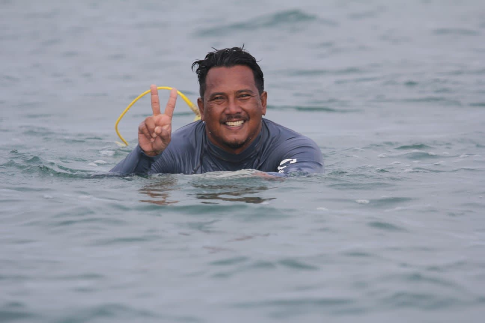

Frengki, a native of Bali, has been an avid surfer for more than 15 years. Prior to establishing Holy Surf Bali, he served as a senior instructor at a prominent surf school in Bali for five years. Frengki holds a bronze certificate in Life Saving surf rescue, advanced resuscitation, and senior first aid, all of which meet international standards. He is qualified as an Australian surfing instructor at both Level 1 and Level 2. Fluent in English, Japanese, Indonesian, and Balinese, Frengki is renowned among guests for his constant reminder to "relax." His passion lies in assisting individuals in learning how to surf and sharing the breathtaking waters of his island paradise.